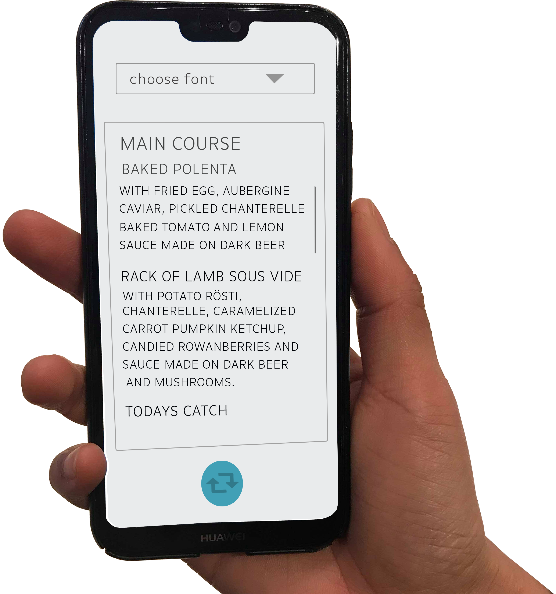

Our solution: an app that helps people with dyslexia read
With "Alexia" we can help people with dyslexia to read things around them.
The user can hover the phone over the text the person wants to see. The camera will scan the text and turn it into a font that is easily read by dylsexic people. If they don't like the font, they can use the photo-to-text function and change the font. When you've taken a photo on the app (photo-to-text function), it will scan the text within the photo and transfer it to a text field with a plain background.
With just one click they can read things, even though it wasn't intended for them.
How to use the app?
When you first open it, you're met by a camera screen. If you hover your phone over the text or paragraph you want to read, it will blur out the text and replace it with a more readable font.

The app has two functions: The "hover" function and the "picture to text" function.
This is how text might look before and after the hover function has been used.
Before the hover function the text is in a serif font, which has been proven to be difficult to read for people with dyslexia.
With the hover function, you simply hover over the menu (or text) and it quickly changes the text to another, more readable, font.

This is how text might look before and after the hover function has been used.
Before the hover function the text is in a serif font, which has been proven to be difficult to read for people with dyslexia.
With the hover function, you simply hover over the menu (or text) and it quickly changes the text to another, more readable, font.
This is the function after you've taken a photo (the photo to text function), which is your second option.
Here you can choose which font you want to use, and inserts it into a text box to make it even clearer.
